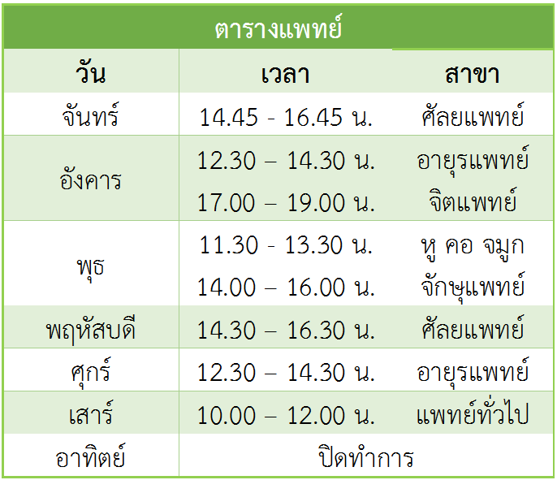

<!--
  Generated template for the HospitalPage page.

  See http://ionicframework.com/docs/components/#navigation for more info on
  Ionic pages and navigation.
-->
<ion-header>

    

</ion-header>


<ion-content padding>
  <!-- <div text-center>
    <br>    
  </div>
  <br/>
  ดูรายละเอียดเพิ่มเติมได้ที่<br/>
  &nbsp;&nbsp;&nbsp;- <a href="https://www.facebook.com/HCkmutnb/" target="_system">facebook</a><br>
  &nbsp;&nbsp;&nbsp;- <a href="http://healthcenter.kmutnb.in.th/" target="_system">งานบริการสุขภาพ</a><br>
  <ion-card>
      <ion-card-title>
          <dd >Institute of Computer <br>
            and <br>
            Information Technology</dd>
        </ion-card-title> -->
        <ion-card>
    <ion-card-header>
        
    </ion-card-header>
    <ion-card-content>
       
        <a href="https://www.facebook.com/HCkmutnb/">Facebook</a><br>
        <a href="http://healthcenter.kmutnb.in.th/"  target="_system">Website</a><br>
      </ion-card-content>
  </ion-card>
</ion-content>
